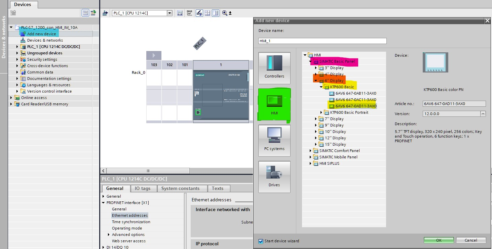
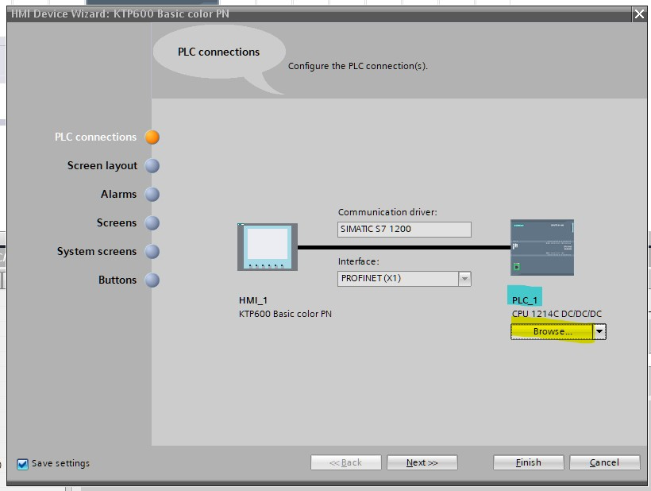
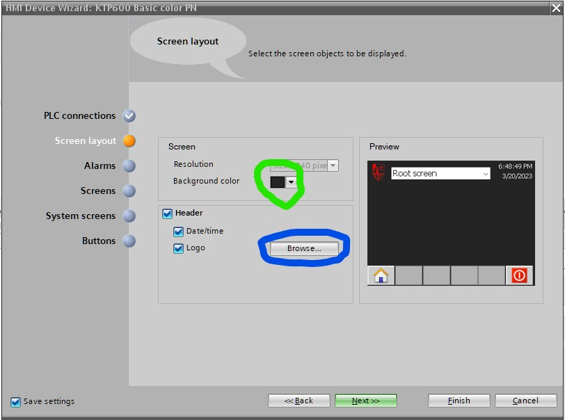
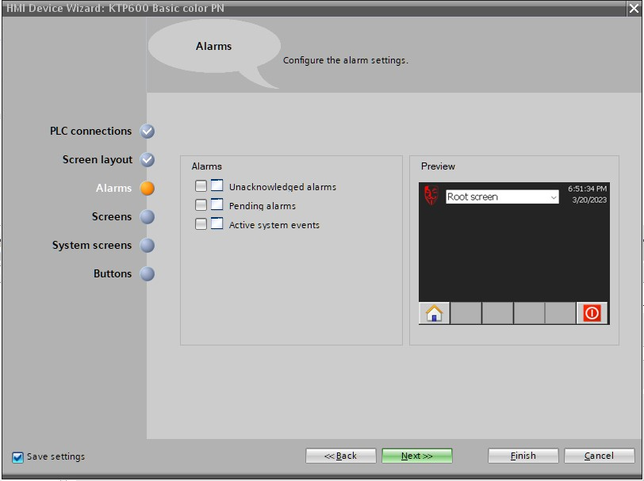
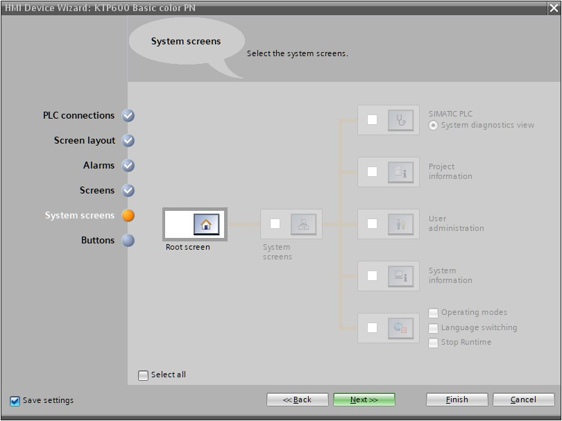
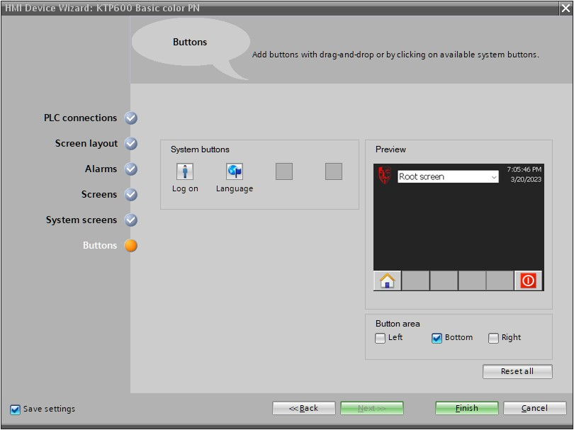
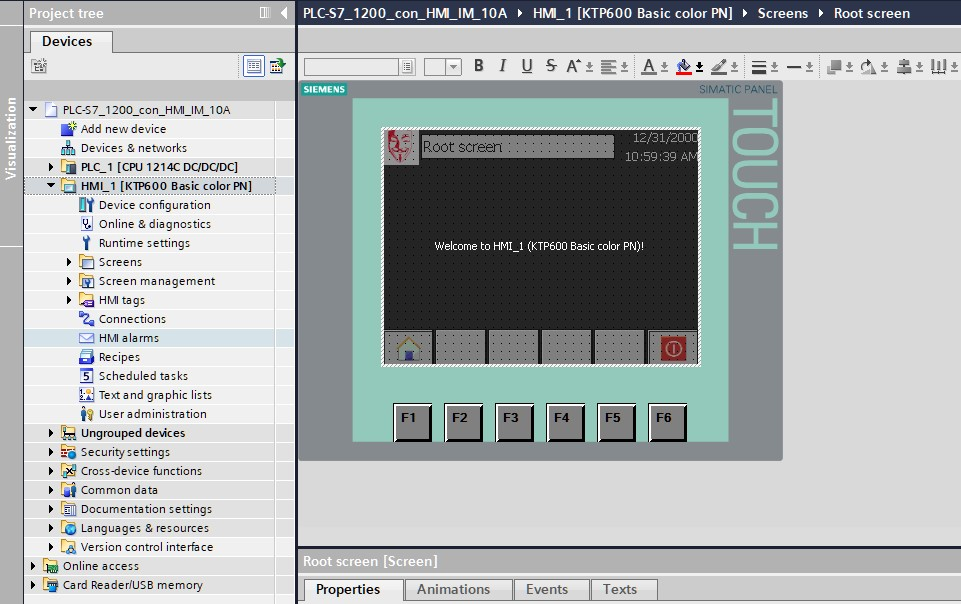

3. Selección de HMI y configuración de IP
3.1 Selección de HMI
- Dirijase a la ventana de dispositivos (
Devices) y seleccione el botón deAdd new device(enmarcado en color azul).
Se abrirá una nueva ventana con varias opciones para añadir nuevos dispositivos en su programa.
-
Seleccione el botón
HMIenmarcado en color verde, despliegue la carpetaHMIque se muestra en el recuadro de carpetas; seleccione y despliegue la subcarpetaSIMATIC Basic Panelenmarcada en color rosa. -
Seleccione la carpeta de panatalla de 6 pulgadas (
6" Display) enmarcada naranja, Despliegue la carpeta de dispositivosKTP600 Basicy seleccione el dispositivo6AV6 647 -0AD11 -3AX0ambos enmarcados en la imagen en color amarillo. -
Presione el boton
Oky con eso finaliza la selección de su dispositivo.

En consecuencia se desplegará una nueva ventana que le preguntará acerca de la configuración que desea hacer para su HMI
3.2 Configuración inicial de HMI
Durante su configuración de su HMI siga los siguientes pasos para aplicar las especificaciones pertinentes.
- Como primer paso le preguntará si conectará su HMI a un PLC, usted debe seleccionar el botón de
Browsersenmarcado en color amarillo en su imagen, por consiguiente debería aparecer el PLC que ocupo en el capitulo selección de plc, que en este caso aparece comoPLC_1el cual se encuentra enmarcado en la imagen en color azul. Posterriormente finalice esta acutalización presionando el botón deNext>>de su ventana para pasar al siguiente paso.

- De formato de color y algunas características a su interfáz de ventana raíz, en el caso de la imagen se añadió un ícono con el botón de
Browsersencerrado en color azul y se selecciono un color de fondo oscuro con el botón de color encerrado en color verde. Nuevamente al terminar esta configuración presione el botón deNext>>para continuar con los pasos.

- Desactive las alarmas, para este caso las opciónes de check-buttons deberian estar desmarcadas ya que para esta práctica no son necesarias. Continue al siguiente paso con
Next>>.

- Asegurese de que la configuración de
Screenssolo esté añadido el íconoRoot screeny solo este la ventana raíz. Siga conNext>>.

- Omita este paso ya que no vamos a conectar la vista
Root screena ninguna configuración especial. Asegurese de que su configuración se encuentre como en la imagen siguiente. Cuando haya configurado correctamente, prosiga conNext>>.

- Asegurese de tener añadidos el boton de
Home(Icono de casa) y el deDisconect(Icono de apagado de la pantalla) a su interfáz de pantalla. Presione enFinishpara finalizar con la configuración.

Al finalizar toda la configuración de su HMI podrá ver una vista similar a la de la imagen siguiente; y en su árbol de carpetas de dispositivos encontrará que se ha añadido una carpeta con el nombre de
HMI_1 [KTP600 Basic color PN]
